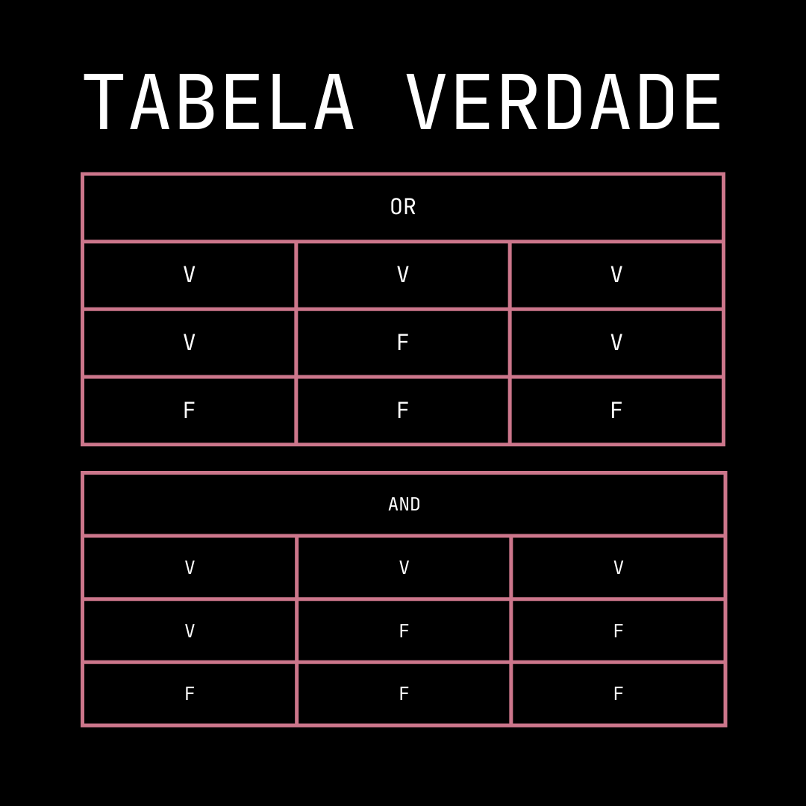

Aula 7 - Operadores Lógicos
OPERADORES LÓGICOS:
Operadores lógicos são símbolos ou palavras-chave usadas em programação e lógica para realizar operações baseadas na lógica booleana. Esses operadores são usados para fazer comparações e tomar decisões com base em condições. Aqui estão alguns dos operadores lógicos mais comuns:
&&: and (e).
Retorna verdadeirotruese ambas as condições forem verdadeiras.||: or (ou).
Retorna verdadeirotruese pelo menos uma das condições for verdadeira.!: not (não).
Inverte o valor da condição; se a condição for verdadeira, ela retorna falso e vice-versa.
